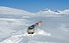

snow
matter

Source: Wikipedia
Wikipedia Page (Something wrong with this association? Let us know.)
Wikidata Page (Something wrong with this association? Let us know.)
Occurs in:
- snow-or-ice__melt_factor
- land_surface_snow_accumulation__time_integral_of_volume_flux
- atmosphere_air_snow~suspended_flowing__mass_concentration
- atmosphere_air_snow~suspended_flowing__volume_concentration
- atmosphere_snow__mass-per-volume_density
- atmosphere_snow_precipitation__duration
- atmosphere_snow_precipitation__volume_flux
- snow_blowing__speed
- snow__cold_energy-per-area_density
- snow__heat_capacity_ratio
- snow__mass-per-volume_density
- snow_isobaric-process__mass-specific_heat_capacity
- snow_isochoric-process__mass-specific_heat_capacity
- snow__temperature
- snow__thermal_conductance
- snow__thermal_conductivity
- snow__thermal_diffusivity
- snow__thermal_inertia
- snow__thermal_resistivity
- snow_isobaric-process__volume-specific_heat_capacity
- snow_isochoric-process__volume-specific_heat_capacity
- snowpack_snow_desublimation__mass_flux
- snowpack_snow_desublimation__volume_flux
- snowpack_snow_desublimation__domain_time_integral_of_volume_flux
- snowpack_snow_sublimation__domain_time_integral_of_volume_flux
- snowpack_snow_sublimation__mass_flux
- snowpack_snow_sublimation__volume_flux
- snowpack_snow~new__depth
- snow~wet_rubber__kinetic_friction_coefficient
- snow~wet_rubber__static_friction_coefficient
- snow~wet_ski~waxed__kinetic_friction_coefficient
- snow~wet_ski~waxed__static_friction_coefficient
- land_surface_snow_sublimation__volume_flux
- land_surface_snow_accumulation__time_integral_of_mass_flux
- land_surface_snow_meltwater__time_integral_of_mass_flux
- land_surface_snow~intercepted__volume-per-area_storage_density